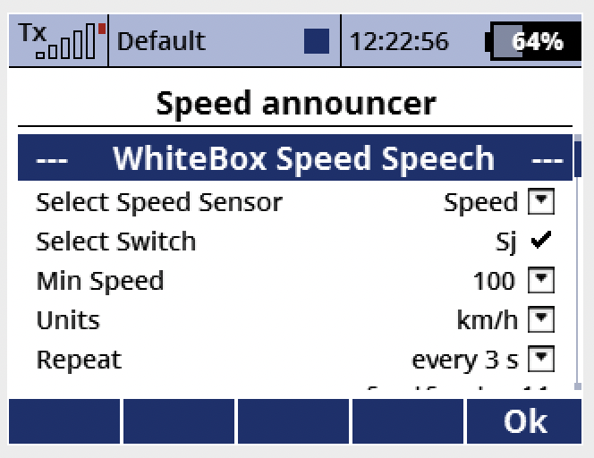

Si hay un captor de velocidad disponible, esta aplication puede anunciar la velocidad sin las unidades.
Instalar la aplicación, esta aparecera en el menu de aplicaciones
Seleccionar el captor de velocidad
Seleccionar el switch que activa los anuncios.
El parámetro "Velocidad Minima" fija la velocidad por debajo de la cual los anuncios son exactamente la velocidad.
Por encima de esta velocidad, solo las decenas son anunciadas (por ejemplo 90 en vez de 91 o 92).
Atención a las unidades!! Tal vez el captor no utiliza las unidades estandard de Jeti
Estas son (mayúsculas y minúsculas cuentan):
Si el captgor reporta la velocidad en otra unidad, la aplicación cosiderará que se trata de m/s.
